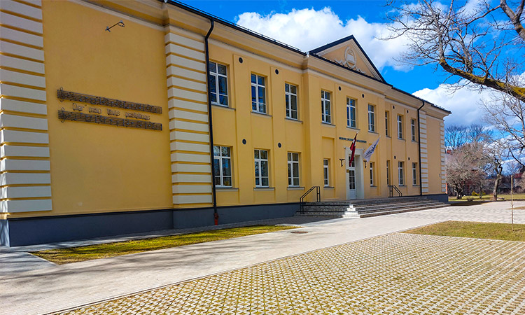
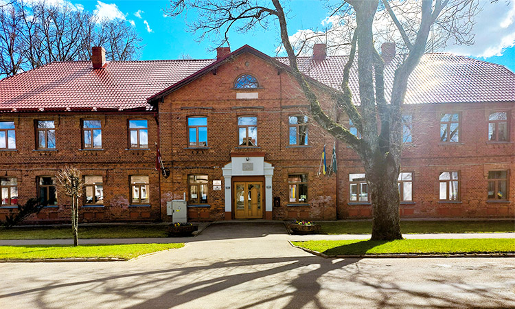

<!DOCTYPE html>
<html lang="en,lv">
<head>
    <title>Māris Cinis</title>
    <link rel="icon" type="image/x-icon" href="resources/images/logo-mc.svg">
    <link rel="stylesheet" type="text/css" href="resources/css/normalize.css"/>
    <link rel="stylesheet" type="text/css" href="resources/css/bootstrap.min.css"/>
    <link rel="stylesheet" type="text/css" href="resources/css/app.css"/>
    <script src="resources/js/jquery-min.js"></script>
    <meta name="viewport" content="width=device-width">
</head>
<body>
<!-- <div class="container-fluid">
    <div class="row section section7">
        <div class="col p-0">
            <div class="section-text">
                <div class="section-background"></div>
                <div class="section-text-container">
                    <h2 lang="lv" class="section-heading">Latvijas Universitāte (2019-šobrīd)</h2>
                    <h2 lang="en" class="section-heading">University of Latvia (2019-now)</h2>
                    <p class="section-paragraph" lang="lv">Kāpēc izvēlējos mācīties par programmētāju? Jo vidusskolā es
                        paņēmu programmēšanas pamatus, kā vienu no izvēles mācību priekšmetiem, un sapratu – tā ir laba
                        sajūta, kad, ja kaut kas nedarbojas, pēc ilgas mocīšanās tu atrodi vainu, un pēkšņi viss
                        darbojas. Kāpēc tieši Latvijas Universitāti Datorikas fakultāti? Man bija izvēle doties uz daudz
                        tuvāku augstskolu Alojai – Vidzemes Augstskolu Valmierā, taču dzirdēju ne pārāk labas atsauces
                        par šo augstskolu no skolasbiedriem. Tāpēc izlēmu studēt Rīgā. Rīgā ir daudz augstskolu ar
                        programmēšanas virzieniem, bet izvēlējos Latvijas Universitāti, jo tā taču ir vecākā
                        universitāte Latvijā un pie tam nosaukta valsts vārdā. <br> Konkursā dabūju 69. vietu no 240.
                        Piesakoties universitātei klātienē, parādot vidusskolas atestātu, atceros, ka man prasīja: “Kāds
                        bija Auseklim īstais vārds?”. Es, protams, atbildēju: “Miķelis Krogzemis”. Atbildēja: “Hm,
                        nezināju!”. Tāpēc iepriekšējā sadaļā mazliet pastāstīju par skolas un Ausekļa vēsturi. Pusotru
                        semestri studēju klātienē, dzīvojot Rīgā kopmītnēs, bet bieži nedēļas nogalēs, braucot ar
                        autobusu atpakaļ uz Aloju. Sākumā bija nepierasti pilsētas dzīve un lielais skaits cilvēku un
                        plašuma universitātes auditorijās. No 2020. gada aprīļa, kad sākās COVID-19 situācija Latvijā,
                        līdz pat šodienai studēju tiešsaistē no Alojas.</p>
                    <p class="section-paragraph" lang="en">Why did I choose to study to be a programmer? Because in high
                        school, I took the basics of programming as one of the optional subjects, and I realized that
                        it's a good feeling when, if something doesn't work, you find fault after a long ordeal, and
                        suddenly everything works. Why the Faculty of Computer Science of the University of Latvia? I
                        had the choice to go to a much closer university to Aloja – Vidzeme University in Valmiera, but
                        I did not hear very good reviews about this university from schoolmates. That's why I decided to
                        study in Riga. There are many universities in Riga with programming directions, but I chose the
                        University of Latvia, because it is the oldest university in Latvia and nevertheless named after
                        the country. <br> I won the 69th place out of 240 in the university place competition. I
                        remember when applying in person, I was asked “What was the real name of Auseklis?”. Of course,
                        I replied, "Miķelis Krogzemis." They replied, "Hm, I didn't know!". So in the previous section I
                        chose to talk a little bit about the history of the school and Auseklis. I studied in person for
                        a semester and a half, living in a dormitory in Riga, but often on weekends, going back to Aloja
                        by bus. In the beginning, city life and many people and spacious university auditoriums was a
                        bit unusual for me. From April 2020, when the COVID-19 situation in Latvia began, even until
                        today I have been studying online from Aloja.</p>
                </div>
            </div>
            <picture>
                <source media="(min-width: 1200px)" srcset="resources/images/7-lu-1200w.jpg">
                <source media="(min-width: 800px)" srcset="resources/images/7-lu-800w.jpg">
                <source media="(min-width: 480px)" srcset="resources/images/7-lu-480w.jpg">
                
            </picture>
        </div>
    </div>
    <div class="row section section6">
        <div class="col p-0">
            <div class="section-text">
                <div class="arrow-container">
                    
                </div>
                <div class="section-background"></div>
                <div class="section-text-container">
                    <h2 lang="lv" class="section-heading">Alojas Ausekļa vidusskola (2011-2019)</h2>
                    <h2 lang="en" class="section-heading">Aloja's Secondary school of Auseklis (2011-2019)</h2>
                    <p class="section-paragraph" lang="lv">Alojas Ausekļa vidusskola tika dibināta 1951. gadā (kā
                        vidusskola, bet pašas <a href="https://www.aavsk.lv/vesture/">skolas vēsture</a> ir vēl senāka),
                        bet pati skolas ēka ir uzcelta 1957. gadā.
                        Skola ir nosaukta latviešu dzejnieka, pedagoga un publicista Ausekļa jeb Krogzemju Mika, jeb
                        Miķeļa Krogzemja vārdā, jo viņš ir dzimis netālu no Alojas “Sīpolos”, dzīvojis Alojā un mācījies
                        Alojas Draudzes skolā. Auseklis aizgāja aizsaulē diezgan jauns (divdesmit astoņi gadi) un viens
                        no skolas audzēkņiem Antons Galeviuss, kurš vēlāk tika ievēlēts, kā skolas vadītājs, ierosināja
                        nosaukt skolu Ausekļa vārdā. Uz skolas ir redzamas pirmās notis un vārdi skolas himnai “Dar’ man
                        tēvis pastaliņas”, kuras vārdi ir viens no Ausekļa dzejoļiem. Pie skolas atrodas <a
                                href="https://upload.wikimedia.org/wikipedia/commons/7/75/Piemineklis_Auseklim_pie_Alojas_Ausek%C4%BCa_vidusskolas%2C_16.07.2016_-_panoramio.jpg">piemineklis
                            (biste) Auseklim</a>. Alojas Ausekļa vidusskolu es lepni beidzu 2019. gadā kopā ar
                        piecpadsmit
                        klasesbiedriem un bijām skolas sešdesmit septītie absolventi. Beidzu ar teicamām un izcilām
                        sekmēm matemātikā, latviešu un angļu valodā, dabas zinātnēs un, protams, informātikā un
                        programmēšanā. 2019. gada vasarā pēc absolvēšanas pieteicos Latvijas Universitātes Datorikas
                        fakultātes vietu konkursam.</p>
                    <p class="section-paragraph" lang="en">Aloja's Secondary school was founded in 1951 (as a secondary
                        school, but the <a href="https://www.aavsk.lv/vesture/">history of the school</a> itself is even
                        older), but the school building itself was
                        built in 1957. The school is named after the Latvian poet, teacher and publicist Auseklis or
                        Krogzemju Mikus, or Miķelis Krogzemis, because he was born near Aloja in Sīpolos, lived in Aloja
                        and studied at the Aloja’s Congregational School. Auseklis left the world quite young
                        (twenty-eight years old) and one of the school's students, Anton Galevius, who was later elected
                        head of the school, suggested naming the school after Auseklis. The first notes and words of the
                        school anthem "Dar’ man tēvis pastaliņas", which is one of Auseklis' poems, can be seen on the
                        school. There is a monument <a
                                href="https://upload.wikimedia.org/wikipedia/commons/7/75/Piemineklis_Auseklim_pie_Alojas_Ausek%C4%BCa_vidusskolas%2C_16.07.2016_-_panoramio.jpg">(bust)
                            to Auseklis</a> near the school. I proudly graduated from Aloja's
                        Secondary school in 2019 with fifteen classmates and we were the school's sixty-seventh
                        graduates. I finish with excellent and outstanding success in mathematics, Latvian and English,
                        natural sciences and, of course, computer science and programming. In the summer of 2019, after
                        graduation, I applied for the competition for places at the Faculty of Computer Science of the
                        University of Latvia.</p>
                </div>
            </div>
            <picture>
                <source media="(min-width: 1200px)" srcset="resources/images/6-aav-1200w.jpg">
                <source media="(min-width: 800px)" srcset="resources/images/6-aav-800w.jpg">
                <source media="(min-width: 480px)" srcset="resources/images/6-aav-480w.jpg">
                
            </picture>
        </div>
    </div>
    <div class="row section section5">
        <div class="col p-0">
            <div class="section-text">
                <div class="arrow-container">
                    
                </div>
                <div class="section-background"></div>
                <div class="section-text-container">
                    <h2 lang="lv" class="section-heading">Alojas Mūzikas un mākslas skola (2010-2015)</h2>
                    <h2 lang="en" class="section-heading">Music and art school of Aloja (2010-2015)</h2>
                    <p class="section-paragraph" lang="lv">2010. gada septembrī 3. klasē es iestājos Alojas Mūzikas un
                        mākslas skolā (dibināta 1995. gadā), precīzāk, tikai mākslas skolā, un absolvēju to 2015. gada
                        maijā 8. klasi beidzot. Atzīšos, ka pats negribēju apmeklēt mākslas skolu, bet gan vecāki
                        piespieda, bet tomēr šajos piecos gados ieguvu ļoti daudz zināšanu dažādās mākslas jomās, kuras
                        man pat palīdz šodien šajā universitātes kursā. Skola, kā jau mazpilsētā, atrodas tuvu mājai
                        (sešsimt metri) un tuvu parastajai skolai (piecsimt metri). Uz mākslas skolu gāju katru darba
                        dienu pēc parastās skolas stundām. Attēlā redzama skolas galvenā ēka pēc rekonstrukcijas
                        (neatceros, kurā gadā). Ēku pirms rekonstrukcijas un skolas ēku sagatavošanas klasēm, kas
                        atrodas pāri ielai, var redzēt <a
                                href="https://kulturasdati.lv/lv/kulturizglitibas-iestades/alojas-muzikas-un-makslas-skola">kulturasdati.lv
                            mājaslapā</a>. Mākslas skolā es apguvu profesionālās
                        ievirzes izglītības programmu “Vizuāli plastiskā māksla”, kas iekļāva šādus mācību priekšmetus:
                        zīmēšana, gleznošana, veidošana (māls), kompozīcija, mākslas valodas pamati un darbs materiālā.
                        No mācību priekšmetiem man vislabāk patika gleznošana un darbošanās ar mālu, tāpēc skolas
                        noslēguma darbā izveidoju māla trauku komplektu.</p>
                    <p class="section-paragraph" lang="en">In September 2010, in the 3rd grade, I started the Aloja
                        School of Music and Art (founded in 1995), more precisely, only in the art school, and graduated
                        in May 2015, finishing the 8th grade. I will admit that I didn't want to go to art school
                        myself, but my parents forced me, but in those five years I gained a lot of knowledge in various
                        fields of art, which even helps me in this university course today. The school, as in a small
                        town, is close to the house (six hundred meters) and close to the ordinary school (five hundred
                        meters). I went to art school every working day after normal school hours. The picture shows the
                        main building of the school after reconstruction (I don't remember which year). The building
                        before the reconstruction and preparation of the school building across the street can be seen
                        on the <a
                                href="https://kulturasdati.lv/lv/kulturizglitibas-iestades/alojas-muzikas-un-makslas-skola">kulturasdati.lv
                            website</a>. At the art school, I studied the vocational education program
                        "Visual Plastic Art", which included the following subjects: drawing, painting, shaping (clay),
                        composition, basics of art language and work in material. Of the subjects, I liked painting and
                        working with clay the best, so I created a set of clay pots for my final schoolwork.</p>
                </div>
            </div>
            <picture>
                <source media="(min-width: 1200px)" srcset="resources/images/5-amms-1200w.jpg">
                <source media="(min-width: 800px)" srcset="resources/images/5-amms-800w.jpg">
                <source media="(min-width: 480px)" srcset="resources/images/5-amms-480w.jpg">
                
            </picture>
        </div>
    </div>
    <div class="row section section4">
        <div class="col p-0">
            <div class="section-text">
                <div class="arrow-container">
                    
                </div>
                <div class="section-background"></div>
                <div class="section-text-container">
                    <h2 lang="lv" class="section-heading">Alojas sākumskola (2007-2011)</h2>
                    <h2 lang="en" class="section-heading">Primary school of Aloja (2007-2011)</h2>
                    <p class="section-paragraph" lang="lv">Alojas sākumskola arī saukta par “balto skolu”, jo reiz nav
                        bijusi krāsaina, kā tagad attēlā, bet gan tikai baltā vai gaiši pelēkā krāsā, ir atsevišķa ēka
                        Alojas Ausekļa
                        vidusskolas teritorijā, kur sāku pirmo klasi 2007. gada septembrī un beidzu ceturto klasi 2011.
                        gada maijā. Skola atradās diezgan tuvu manai mājai – 500 metrus, tāpēc uz skolu katru rītu ap
                        8:50 gāju ar kājām ar savu brāli, kurš mācījās pamatskolā (vidusskolas ēkā). Manā klasē bija ap
                        20 skolēniem un barga klases audzinātāja, kura mācīja mums matemātiku, latviešu valodu un
                        mājturību. Salīdzinot ar bērnudārzu, es sākumskolā biju paklausīgs zēns ar ļoti labām sekmēm
                        matemātikā, latviešu valodā, angļu valodā un dabas zinātnēs, kā arī biju visātrākais svešu
                        tekstu lasītājs klasē. 2010. gadā tika pabeigta lielā Alojas sporta halle, kas atrodas aiz
                        sākumskolas un kur mums notika sporta nodarbības, kuras pirms tam notika vidusskolas ēkas mazajā
                        zālē. Sports bija vienīgais mācību priekšmets, kas man nepadevās. Par skolas vēsturi var palasīt
                        <a href="https://www.aavsk.lv/vesture/">Alojas Ausekļa vidusskolas mājaslapā</a>.</p>
                    <p class="section-paragraph" lang="en">Primary school of Aloja, also called the "white school"
                        because it was once only coloured in white or light grey and not multiple colours, as it is now
                        in the picture,
                        is a separate building on the territory of Aloja’s Secondary school of Auseklis, where I started
                        first grade in September 2007 and finished fourth grade in May 2011. The school was quite close
                        to my house – 500 meters, so I went to school every morning around 8:50 on foot with my brother,
                        who was in fifth to ninth grade (secondary school building). There were about 20 students in my
                        class and a tough class teacher who taught us math, Latvian and housekeeping. Compared to
                        kindergarten, I was an obedient boy in primary school with very good results in mathematics,
                        Latvian, English and science, as well as I was the fastest reader in the classroom. In 2010, the
                        large Aloja sports hall, which is located behind the primary school and where we had PE, which
                        was previously held in the small hall of the secondary school building, was completed. Sport was
                        the only subject I did not do good in. You can read about the history of the school on the
                        <a href="https://www.aavsk.lv/vesture/">website of Aloja’s Secondary school of Auseklis (in
                            Latvian)</a>.</p>
                </div>
            </div>
            <picture>
                <source media="(min-width: 1200px)" srcset="resources/images/4-alojas-sakumskola-1200w.jpg">
                <source media="(min-width: 800px)" srcset="resources/images/4-alojas-sakumskola-800w.jpg">
                <source media="(min-width: 480px)" srcset="resources/images/4-alojas-sakumskola-480w.jpg">
                
            </picture>
        </div>
    </div>
    <div class="row section section3">
        <div class="col p-0">
            <div class="section-text">
                <div class="arrow-container">
                    
                </div>
                <div class="section-background"></div>
                <div class="section-text-container">
                    <h2 lang="lv" class="section-heading">Pirmsskolas izglītības iestāde "Auseklītis" (2003-2007)</h2>
                    <h2 lang="en" class="section-heading">Preschool educational institution "Auseklītis"
                        (2003-2007)</h2>
                    <p class="section-paragraph" lang="lv">Alojas pilsētas pirmsskolas izglītības iestāde “Auseklītis”
                        ir vienīgais bērnudārzs Alojā, kuru es uzsāku 2003. gadā un beidzu 2007. gadā. Tas atrodas viena
                        kilometra attālumā no manas mājas, un tur katru dienu nokļuvu, sēžot manas mammas divriteņa
                        aizmugurē. Manā bērnudārza grupiņā bija četrpadsmit bērni un grupiņu sauca “Mārītes”. Bērnudārzā
                        kopā bija 6 auklītes vai audzinātājas. Bērnudārzam ir nožogots āra laukums, kurā ir tādas
                        atrakcijas kā šūpoles, smilšu kastes, slidkalniņi, dažādas kāpšļu konstrukcijas un citas. Kā,
                        liekas, jebkuram bērnam, man patika iet ārā, taču dažkārt bērnudārza laikā biju liels blēņdaris,
                        tādēļ, kā par sodu blēņām, man vienkārši neļāva iet ārā. Atceros, ka reiz lauzu durvis apkopējas
                        rīku skapim, jo gribēju zināt, kas tur iekšā, reiz ar ragavām uzbraucu jauniestādītam kociņam
                        (kaut tas nebija tīšām), kā arī gandrīz nekad negulēju diendusu, jo nenāca miegs. Taču vienreiz
                        es visilgāk no pārējiem bērniem palīdzēju bērnudārza audzinātājām uzkopt bērnudārza apkārtni, kā
                        rezultātā dienas beigās saņēmu saldumus un uzslavējumu no audzinātājām.</p>
                    <p class="section-paragraph" lang="en">Aloja City Preschool Auseklītis is the only kindergarten in
                        Aloja that I started in 2003 and finished in 2007. It’s one kilometre from my house, and I get
                        there every day, sitting on the back of my mom’s bike. There were fourteen children in my
                        kindergarten group and the group was called "Mārītes". There were a total of 6 babysitters or
                        educators in the kindergarten. The kindergarten has a fenced outdoor area with attractions such
                        as swings, sandboxes, slides, various step structures and more. Like any child, I enjoyed going
                        out, but sometimes I was disobedient during kindergarten, so as a punishment, I just wasn't
                        allowed to go out. I remember that once I was breaking the door of the janitor’s tool cabinet
                        because I wanted to know what was inside, I rode into a newly planted tree with a sled (although
                        it wasn't intentional), and I almost never slept because I didn't feel tired. However, once for
                        the longest time I helped the kindergarten teachers clean up the kindergarten area, as a result
                        of which I received sweets and praise from the kindergarten teachers at the end of the day.</p>
                </div>
            </div>
            <picture>
                <source media="(min-width: 1200px)" srcset="resources/images/3-pii-auseklitis-1200w.jpg">
                <source media="(min-width: 800px)" srcset="resources/images/3-pii-auseklitis-800w.jpg">
                <source media="(min-width: 480px)" srcset="resources/images/3-pii-auseklitis-480w.jpg">
                
            </picture>
        </div>
    </div>
    <div class="row section section2">
        <div class="col p-0">
            <div class="section-text">
                <div class="arrow-container">
                    
                </div>
                <div class="section-background"></div>
                <div class="section-text-container">
                    <h2 lang="lv" class="section-heading">Aloja (2000-šobrīd)</h2>
                    <h2 lang="en" class="section-heading">Aloja (2000 - now)</h2>
                    <p class="section-paragraph" lang="lv">Aloja kopš 1992. gada ir maza pilsēta Latvijā, Vidzemes
                        ziemeļos. Attēlā redzams Alojas pilsētas domes un kultūras nams. Tās platība ir aptuveni 2,7
                        kvadrātkilometri, bet iedzīvotāju skaits ap 1000. Tā
                        atrodas simts divdesmit kilometrus no Rīgas, četrdesmit četrus kilometrus no Valmieras un
                        trīsdesmit trīs kilometrus no Limbažiem. Pirms Latvijas 2021. gada 1. jūlija administratīvi
                        teritoriālās reformas Alojai bija savs novads – Alojas novads –, bet tagad ir daļa no Limbažu
                        novada. Aloja ir zināma, kā latviešu aktiera Laura Dzelzīša (1978) dzimšanas un dzīves vieta un
                        latviešu dzejnieka Ausekļa, īstajā vārdā Miķeļa Krogzemja (1850 – 1879), dzīves vieta. <br> Es
                        dzīvoju un mācos Alojā kopš savas dzimšanas. Līdz 2005. gadam dzīvoju daudzdzīvokļu ēkā pilsētas
                        centrā vienistabas dzīvoklī, taču pēc tam pārvācāmies uz divistabu dzīvokli tajā pašā mājā. Kā
                        saka, zinu Aloju, kā manas plaukstas aizmuguri. Gandrīz katru dienu gāju un vēljoprojām eju
                        pastaigās pa Aloju; Alojā, tāpat kā jebkurā citā “lauku pilsētā” (kā “pilsētnieki”, kuri bieži
                        brauc uz Aloju atpūsties, mēdz sacīt) nebrauc daudz automašīnu un ir labs, tīrs gaiss. Bieži
                        veicu dārza darbus mūsu ģimenes dārzā, kas atrodas viena kilometra attālumā no mājas un kur mēs
                        katru gadu audzējam dažādus augļus un dārzeņus.</p>
                    <p class="section-paragraph" lang="en">Aloja has been a small town in Latvia, north of Vidzeme,
                        since 1992. The picture shows Aloja City Council and the House of Culture. It covers an area of
                        about 2.7 square kilometres and has a population of about
                        1,000. It is located one hundred and twenty kilometres from Riga, forty-four kilometres from
                        Valmiera and thirty-three kilometres from Limbaži. Prior to the administrative-territorial
                        reform of Latvia on July 1, 2021, Aloja had its own municipality - Aloja municipality - but is
                        now part of Limbaži municipality. Aloja is known as the birthplace and residence of the Latvian
                        actor Lauris Dzelzītis (1978) and the residence of the Latvian poet Auseklis, real name Miķelis
                        Krogzemis (1850 - 1879). <br> I have lived and studied in Aloja since I was born. Until 2005, I
                        lived in an apartment building in the city centre in a one-room apartment, but then we moved to
                        a two-room apartment in the same house. As they say, I know Aloja as the back of my hand. Almost
                        every day I walked and still walk around Aloja; Aloja, like any other "rural town" (like the
                        "city people" who often go to Aloja to relax, say) does not have many cars and good, clean air.
                        I often do gardening in our family garden, which is one kilometre from home and where we grow a
                        variety of fruits and vegetables every year.</p>
                </div>
            </div>
            <picture>
                <source media="(min-width: 1200px)" srcset="resources/images/2-aloja-1200w.jpg">
                <source media="(min-width: 800px)" srcset="resources/images/2-aloja-800w.jpg">
                <source media="(min-width: 480px)" srcset="resources/images/2-aloja-480w.jpg">
                
            </picture>
        </div>
    </div>
    <div class="row section section1">
        <div class="col p-0">
            <div class="section-text">
                <div class="arrow-container">
                    
                </div>
                <div class="section-background"></div>
                <div class="section-text-container">
                    <h2 lang="lv" class="section-heading">Limbažu slimnīca (2000)</h2>
                    <h2 lang="en" class="section-heading">Hospital of Limbaži (2000)</h2>
                    <p class="section-paragraph" lang="lv">2000. gada 28. jūlijā plkst. 22:30 šajā Limbažu pilsētas
                        slimnīcā piedzimu es, Māris Cinis, sešdesmit divus centimetrus garš un četrus kilogramus smags.
                        Limbaži atrodas Vidzemē un ir viena no senākajām Latvijas pilsētām. Tā ieguva pilsētas tiesības
                        1385. gadā un ir viena no Hanzas savienības pilsētām. Pilsēta ir zināma kā Baumaņu Kārļa,
                        Latvijas himnas “Dievs, svētī Latviju!” autora, dzimtā vieta. Tajā pašlaik dzīvo ap septiņiem
                        tūkstošiem iedzīvotāju, un Limbaži ir tuvākā “lielpilsēta” manai līdz šim vienīgajai
                        dzīvesvietai – Alojai, kur jau tolaik dzīvoja mana māte Tatjana Cine, tēvs Uldis Cinis un par
                        mani piecus gadus vecāks brālis Gatis Cinis. Bieži nācās braukt no Alojas uz Limbažiem, jo
                        Alojai, kā mazpilsētai, nav pieejamu tik daudz pakalpojumu kā Limbažos, it īpaši, specializētu
                        ārstu un tirdzniecības vietu, tāpēc šobrīd Limbaži ir man tuva un pazīstama pilsēta. Limbaži ir
                        arī viena no pieturvietām, braucot uz Latvijas Universitāti, manā divu stundu un trīsdesmit
                        piecu minūšu garajā autobusa maršrutā no Alojas uz Rīgu.</p>
                    <p class="section-paragraph" lang="en">July 28, 2000, at 22:30 in this Limbaži city hospital I,
                        Maris Cinis, was born sixty-two centimetres long and weighed four kilograms. Limbaži is located
                        in Vidzeme and one of the oldest cities in Latvia. It acquired city rights in 1385 and is one of
                        the cities of the Hanseatic League. The city is known as Kārlis Baumanis, the Latvian anthem
                        "God bless Latvia!" author, native place. Currently, there are about seven thousand people
                        living in Limbaži, and it is the closest "big city" to my only place of residence - Aloja, where
                        my mother Tatjana Cine, father Uldis Cinis and brother Gatis Cinis, who was five years old,
                        already lived at that time. I often had to travel from Aloja to Limbaži, because Aloja, as a
                        small town, does not have as many services as in Limbaži, especially specialized doctors and
                        shops, so now Limbaži is a city close and familiar to me. Limbaži is also one of the stops on
                        the way to the University of Latvia on my two-hour and thirty-five-minute bus route from Aloja
                        to Riga.</p>
                </div>
            </div>
            <picture>
                <source media="(min-width: 1200px)" srcset="resources/images/1-limbazu-slimnica-1200w.jpg">
                <source media="(min-width: 800px)" srcset="resources/images/1-limbazu-slimnica-800w.jpg">
                <source media="(min-width: 480px)" srcset="resources/images/1-limbazu-slimnica-480w.jpg">
                
            </picture>
        </div>
    </div>
    <div class="row intro align-items-center">
        <div class="arrow-container">
            
        </div>
        <div class="col text-center">
            
            
            <br><br>
            <h2 class="title" lang="lv">Mans ceļš uz Latvijas Universitāti... no paša sākuma</h2>
            <h2 class="title" lang="en">My journey to the University of Latvia... from the beginning</h2>
            <br>
            <p class="author">Māris Cinis</p>
            <br><br>
            <div class="row">
                <div class="col">
                    
                    
                </div>
            </div>
        </div>
    </div>
</div> -->
<script src="resources/js/app.js"></script>
</body>